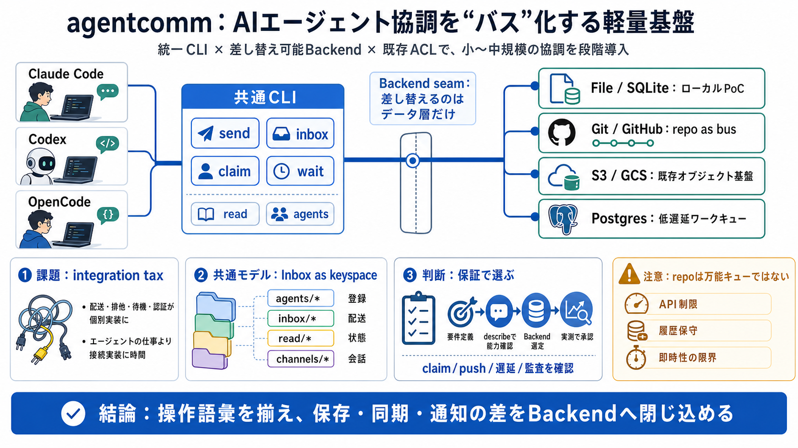

Runtime
実行環境が異なる
Claude Code、Codex、OpenCodeなどで、プラグイン方式やセッションのライフサイクルが異なる。

Agent coordination infrastructure
AIエージェント協調を「バス」化する軽量基盤
共通CLI、差し替え可能なBackend、既存ストレージの権限モデルを組み合わせる設計を、導入判断の観点から読み解く。
Core thesis
agentcommの価値は、新しい重いメッセージ基盤を必須にせず、AIエージェント間通信を単一の操作体系へ寄せることにある。小～中規模の協調には有望だが、保証と性能はBackendごとに確認が必要だ。
Coordination problem
複数のAIランタイムを連携させると、通信経路だけでなく、配送・排他・待機・認証の意味まで個別実装になりやすい。
Runtime
Claude Code、Codex、OpenCodeなどで、プラグイン方式やセッションのライフサイクルが異なる。
Transport
GitHub、Git、SQLite、S3、GCS、Postgresでは、I/O・権限・遅延特性が揃わない。
Semantics
claimの排他性やwaitの即時性を、すべての保存先で同じにはできない。
結果：エージェントの仕事より、チャネル・キュー・接続の実装に時間が使われる。
integration taxFour shared verbs
利用者が触る操作は固定し、配送の実体だけをBackendへ委ねる。エージェント側は保存先ではなく、仕事の受け渡しに集中できる。
send相手、チャンネル、または会話単位へメッセージやタスクを送る。
inbox自分に届いた未処理の項目を、共通形式で確認する。
claim対応可能なBackendでは、タスクを排他的に引き受ける。
wait新着を待つ。pushまたはpollingの違いはBackendが吸収する。
readは処理状態を、agentsは参加者の把握を補助する。操作語彙を揃えることが、ランタイム間の共通契約になる。
Inbox as keyspace
ファイル、オブジェクト、行、コミットという物理表現が違っても、論理モデルは同じキー群へ寄せられる。
Registry
agents/*参加エージェントと接続IDを把握するための登録領域。
Delivery
inbox/*受信者ごとのメッセージやタスクを置く配送領域。
State
read/*確認済み・処理済みの状態を表現する管理領域。
Conversation
channels/*lobby、topic、threadなどの会話単位を整理する領域。
抽象化の要点：データ構造を共通化し、保存・同期・通知の差だけをBackendの責務にする。
logical firstBackend seam
CLIと協調ロジックを固定し、Backend seam（差し替え境界）で保存先を交換する。PoCから共有運用へ進んでも、利用者の操作体系を維持できる。
send · inbox · claim · wait · read · agents
Inspectable contracts
describeとchannelsにより、Backendのclaim・push・制約や、利用中の会話構造を確認できる。選定を「動いたか」から「意図した保証か」へ変える。
Backend contract
agentcomm describe対応能力、性能上の特性、claimやpushの可否、利用時の注意点を機械的に確認する入口。
Conversation map
agentcomm channelslobbyやtopicを含む会話単位を可視化し、運用上のトポロジーを把握する入口。
遅延・排他・監査
describeで確認
トポロジーに合わせる
負荷・遅延を検証
Choose by topology
各Backendは同じコマンドを受け付けても、遅延・排他・保守方法は同じではない。用途に近いトポロジーから候補を絞る。
file:// / SQLite能力の最終判断は、利用バージョンのdescribeと実環境テストで行う。
Repo as bus
Git系リポジトリを通信経路にすると、既存のアクセス制御と開発フローを再利用できる。一方、API・履歴・同期モデルはリアルタイムキューとは異なる。
Why it works
リポジトリ権限を通信経路のアクセス制御へ流用できる。
Gitの変更履歴を、運用上の追跡材料として利用できる。
既存のコード基盤上で協調を開始し、初期投資を抑える。
Where it bends
GitHub RESTと高頻度pollingは、遅延や制限の影響を受ける。
削除もコミットを伴い、長期運用では履歴と容量を管理する。
厳密なリアルタイム用途では、別Backendの方が自然になる。
Claim semantics
排他的な引き受けは、すべてのBackendに自動で付く保証ではない。対応しない保存先で、見かけだけの排他性を作らない姿勢が重要になる。
Capability present
同時claimテストを含め、実装が定める排他契約の範囲でワーカー間の競合を制御する。
Capability absent
単一consumer、冪等処理、重複検知など、用途側で必要な代替策を明示して選ぶ。
設計原則：共通インターフェースは操作を揃えるが、存在しないトランザクション保証まで同一化しない。
honest abstractionWait is contextual
同じ待機コマンドでも、通知方式はpushからpollingまで幅がある。タイムアウト設定だけでなく、期待遅延とAPI負荷を設計対象にする。
Lower latency
LISTEN / NOTIFYを利用し、push型の待機へ近づける。
Responsive local UX
ローカル常駐プロセスがリモートpollingを肩代わりし、CLI応答を分離する。
Polling bound
ポーリング間隔、タイムアウト、API制限が待機体験を左右する。
「リアルタイム」という一語ではなく、p95待機時間・polling頻度・失敗時の再試行を環境ごとに決める。
measure latencySeparate remote I/O
ネットワークバスでは、ローカル常駐daemonがpollingと送受信を担う。エージェントの各コマンドが直接リモートI/Oを待つ構造を避けられる。
Direct remote I/O
毎回実行
待機
応答
コマンドごとにネットワーク遅延と接続処理を受けやすい。
Daemon mediated
local request
常駐・poll
非同期I/O
自動起動・停止を含むライフサイクルで、対話体験と同期処理を分離する。
daemonはBackendの物理的な遅さを消すのではなく、遅さを利用者の操作経路から隔離する。
latency isolationMixed runtime support
Claude Code、Codex、OpenCode向けの統合導線が用意され、単体CLIだけでなくセッション型ランタイムへ組み込める。
Claude Code
セッションの開始・終了に合わせ、登録やdaemon利用をワークフローへ組み込む。
Codex
ランタイム固有の実行方法を保ちながら、同じ送受信操作とBackendを共有する。
OpenCode
モデルやツールチェーンが違っても、共通のinboxと会話規約へ参加できる。
相互運用性の源泉：同じモデルを使うことではなく、同じ通信契約とチャンネル規約を使うこと。
protocol over modelFrom install to handoff
成功する運用はコマンドの配布だけでは終わらない。接続、規約、登録、受け渡し、保守を一つのライフサイクルとして設計する。
Backend URL、依存ドライバ、権限を準備
lobby、topic、thread、命名を統一
開始時にagentを自動登録
send、inbox、claim、waitを利用
read、purge、更新通知を運用
プラグインと自動登録は導入摩擦を下げるが、組織の会話規約と責任者までは自動化しない。
workflow firstOperational hygiene
daemonやpurgeは作業量を減らすが、何を残し、誰が消し、どの名前で会話するかは利用組織が決める必要がある。
conventionsを基準に、lobby・topic・threadの命名、用途、所有者を揃える。
purgeの既定30日／7日を確認し、read・削除・agent registry保全のルールを決める。
“update available”通知、Gitベース配布、バージョン凍結、信頼済みhookの承認を統制する。
GitHubバスでは削除もコミットとして残り得る。busをクリーンにする担当と頻度を導入前に割り当てる。
assign ownershipIdentity is layered
--asは、認証ではない接続IDは会話上のエイリアスであり、本人確認を保証しない。ストレージ認証、検証可能な実体、監査方針を別レイヤーとして設計する。
Display identity
--as誰として会話するかを示す名前。偽装防止の認証機構ではない。
Authentication
GitHub token、Git資格情報、DB認証などが実際のアクセス主体を決める。
Verifiable subject
Git系ではコミット著者など、検証可能な実体を監査材料にできる。
Governance
名義、実行主体、送信先、時刻、秘密情報禁止を組織ルールとして補う。
最低条件：エージェント名と認証主体を紐づけ、秘密情報をbusへ送らない規約と監査導線を設ける。
alias ≠ identityDocumented validation
READMEには主要Backendの回帰、同時claim、waitのpush・latency検証が明記される。抽象化の壊れやすい境界を意識した品質設計と評価できる。
End to end
共通操作が複数の保存先で成立することを、e2eの観点から確認する。
Concurrency
複数workerが同じ仕事を取得しようとする、競合時の挙動を検証する。
Responsiveness
通知経路と待機時間を、Backendの能力差を含めて確認する。
設計意図、回帰防止への姿勢、重要な競合条件の認識。
本番トラフィックでの性能、長期安定性、利用組織での実績。
Healthy boundaries
agentcommは、どのBackendでも同じ保証が得られるとは主張しない。失敗しやすい配置や運用を明文化する姿勢は、導入時の誤解を減らす。
SQLiteをオブジェクトストレージ上へ置かず、物理ディスク前提で扱う。
未対応Backendに、無理な排他保証を持ち込まない。
REST制限とpollingにより、高頻度・低遅延用途では適性確認が必要。
現時点でnpm公開ではなく、固定URL、更新、承認の統制が必要。
抽象化の品質は「差を消した数」ではなく、消せない差を正しく公開したかで判断する。
explicit limitsREADME is not telemetry
公開文書は設計理解には十分でも、本番適合性を証明する実利用データではない。導入判断には自組織での追加検証が必要になる。
秒間送受信数、同時agent数、claim競合率の実測値がない。
リポジトリやinboxが増大した際の遅延・容量推移が不明。
API、polling、DB、履歴保守を含む長期コストが示されていない。
他のメッセージ基盤やエージェント協調ツールとの性能比較がない。
可用性目標、メトリクス、障害検知、名義追跡の標準運用は利用側に残る。
Where it fits
agentcommは、既存インフラを活かして小さく始めたい組織と相性がよい。厳格なリアルタイム性や統一トランザクションを求める場合は、先に実証が必要だ。
Good fit
チーム連携、非同期会話、ワークキュー、タスク引き渡し。
GitHub、オブジェクトストレージ、DBの権限と運用を再利用。
Claude Code、Codex、OpenCodeを共通busへ接続。
重い専用ミドルウェアを先に構築せず、PoCを開始。
Verify first
常時リアルタイム応答が業務要件になるケース。
大量メッセージと多数workerを継続処理するケース。
Backendを問わず同じ排他保証を要求するケース。
製品化済みの監査・保全・証跡機能が必須のケース。
Prove then expand
Backend seamの価値は、最初から複雑な構成を選ばなくてよいことにある。各段階で必要な保証を検証し、通過した時だけ共有範囲を広げる。
Local proof
基本フロー、メッセージ形式、agent名、lobby規約を少人数で確認する。
Shared pilot
既存ACL、混在ランタイム、daemon、purge、監査導線をチームで試す。
Production posture
必要なclaim・push・遅延を満たすBackendへ移し、SLOと監視を追加する。
段階ごとの通過条件は、機能確認 → セキュリティ確認 → 負荷試験 → 障害試験 → 運用承認の順で置く。
gated adoptionBefore production
共通CLIの便利さだけで本番採用を決めない。保証、遅延、本人性、保守、証拠を具体的な運用値へ落とす。
誰が誰へ送り、共有busはどこに置くか。
排他取得は必須か。選定Backendは保証するか。
許容待機時間とpolling負荷はいくつか。
--asと実際の認証主体をどう結びつけるか。
誰が、何日後に、どのデータを消すか。
どの負荷試験・障害試験・監査確認で承認するか。
未回答の項目がある間は、本番移行ではなく制約付きpilotとして扱う。
no silent assumptionsFinal assessment
agentcommは、AIエージェント協調の実務的な地盤を既存インフラ上へ作る現実解である。強みは統一操作と差し替え境界、成功条件はBackendごとの保証・identity・retention・SLOを利用側が明文化することだ。
Source boundary
本資料は公開READMEに基づく設計評価であり、利用実績や独立ベンチマークの報告ではない。記載された機能と、そこから導いた判断を区別して読む必要がある。
Primary source
提供資料の前提となるREADME全体。インストール、コマンド、設計、Backend、テスト、最近の更新を含む。
Documented claims
共通CLI、Backend seam、daemon、統合プラグイン、能力差、制約、e2e・claim・wait検証。
Analytical judgment
小～中規模への適性、運用・セキュリティ・経済面の含意、追加検証が必要な領域。
公開された設計思想、操作体系、対応Backend、明文化された制約とテスト方針。
実利用のSLO、スループット、長期コスト、比較性能、規制環境での監査適合性。
**VS Code Extension (all-in-one, bundled local backend, no separate Python backend or local Node server install required…
*Five months after the largest seed round in developer-tools history, Entire is reimagining version control for agent-sc…
# Will agents like Git any more than we do? For better and worse, the industry has (mostly) converged on Git for version…
### Ex-GitHub chief’s Entire opens distributed Git network for the AI agent era. Entire Inc., the developer-platform sta…
AI / AI Agents / AI Infrastructure / Developer tools" name="x-tns-categories">Frederic Lardinois" name="x-tns-authors"> …